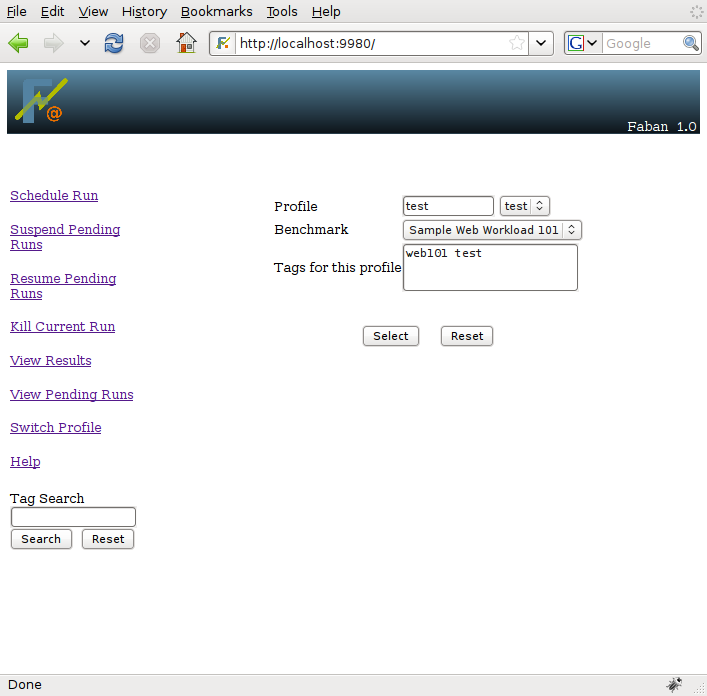
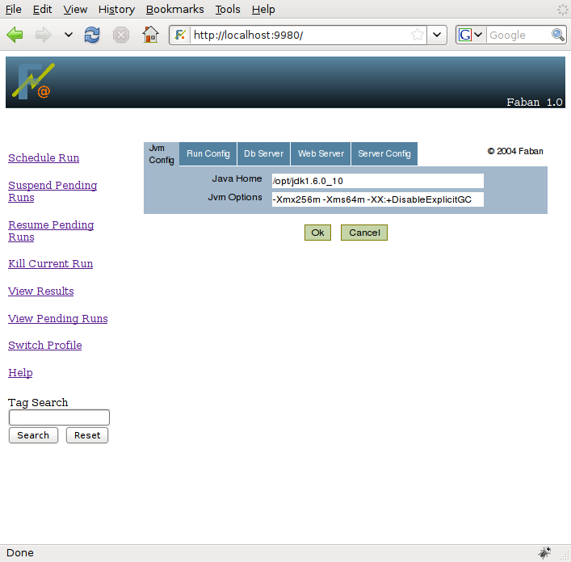
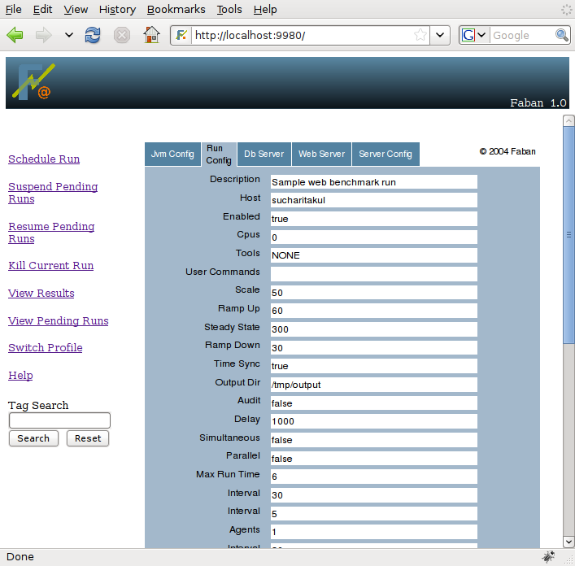
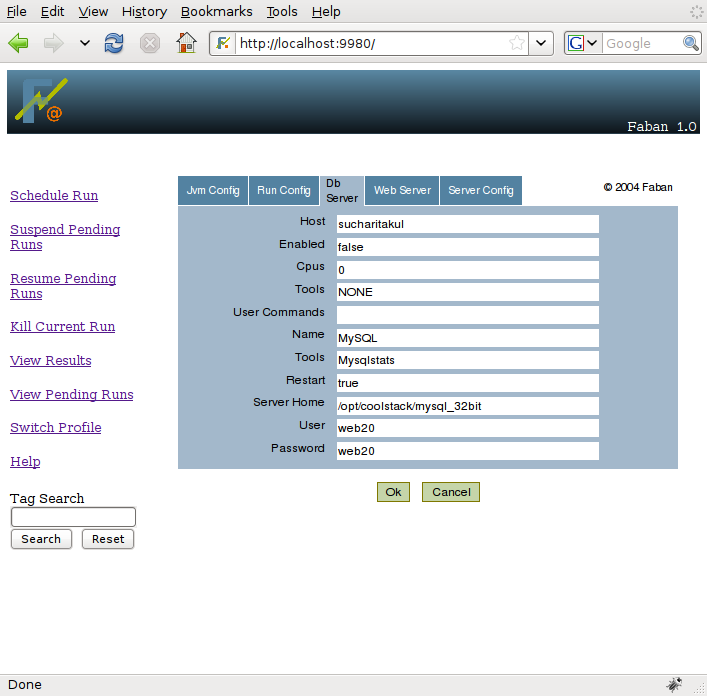
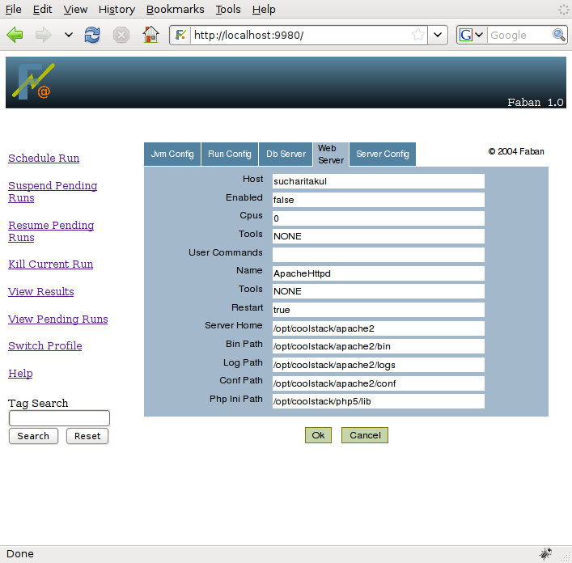
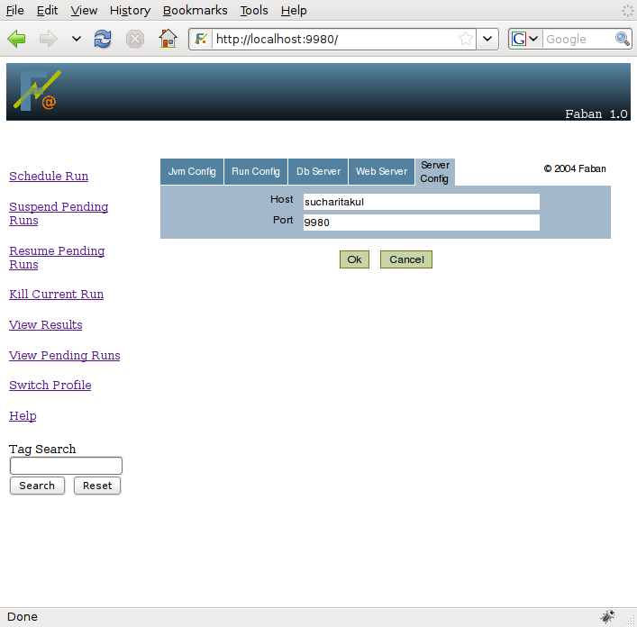
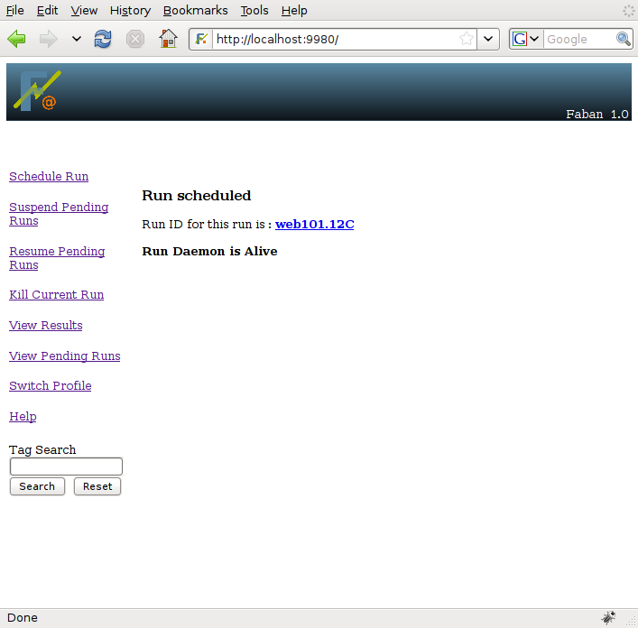

One of the most frequent operations one will make in Faban is scheduling runs. Scheduling runs puts a run request into the run queue. This does not necessarily mean that the run will be executed right away. It depends on whether there are any prior runs scheduled or not. It also depends whether the run queue is suspended or not.
To schedule a run, simply select Schedule Run
from the left menu bar. Please note that you need to have at least one
benchmark deployed in order to schedule a run. Please see Deploying Benchmarks for more information.
The followings discuss the steps involved in scheduling a run:
If a user profile and benchmark has not been selected prior to this, Schedule Run will take you to the user screen. On this screen you can enter a new user profile name or select one of the available user profiles in the drop down box.
If only one benchmark is deployed, that benchmark will be selected
by
default. If, however, you have more than one benchmark deployed, the
benchmark selection drop down box will show up and allow you to select
the benchmark you want to run. In addition you can enter tags for each
profile in the Tags field. For every run made using this profile,
its tags get propagated to the run by default. However, if you
want you can edit the tags for the run from the runinfo page. Please
refer to the Run Results page for more
information.

Click Select once you have made the right selections.
After the user profile and benchmark has been selected, the
submission screens will show up. The screenshots below show example
submission screens from the sample Web101 benchmark. You would move
between these screens by selecting the tab representing the sceen.





The submission screens are benchmark specific and provided with each
benchmark deployment, yet there may be some commonalities. The Java and Driver tabs are
relatively common among benchmarks. All other tabs are specific to the
benchmark. The submission screens come preloaded with configuration
values
from your most recent run, based on your user profile. If there is no
previous run, the default values provided by the benchmark are
preloaded. The submission screens allow you to edit the benchmark
parameters for the run about to be submitted and these values are again
saved for your subsequent runs. This edit/save feature allows you to
edit just the differences from run to run and not having to re-enter
the whole configuration over and over again. If you leave the steady
state field blank, then the tools will run until the benchmark ends.
Once you have made the necessary edits on the submission screens,
click OK
and the run will get scheduled into the run queue. The submission
confirmation page allows you to navigate to the run, whether it is
currently running or just in the run queue:
